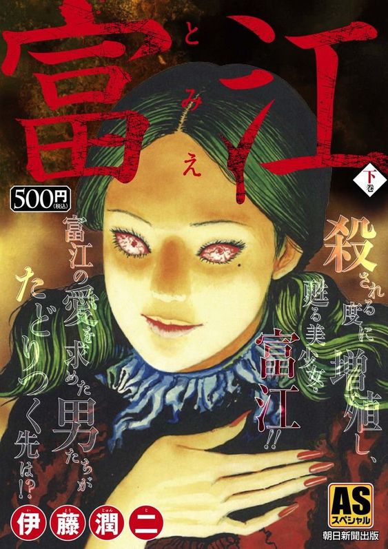

Tomie foi publicado pela primeira vez pela editora Asahi Sonorama no formato de série na revista de mangá Monthly Halloween entre 1987 e 2000, vencedora do prêmio Kazuo Umezu, em 1989, e tida como uma das mais influentes de seu gênero no Japão,sendo o manga mais famoso do junji no oriente rendendo diversos filmes e animes, foi o manga que lançou junji ito no mercado de quadrinhos, o que mais tarde lhe renderia o titulo de rei do horror japones.Tomie é a historia de uma garota perversa,um ser perturbador, perturbador pois tomie é a personificação do desejo humano,afinal o que torna um ser um humano é a capacidade de desejar,mais bela do que qualquer outra ningem sabe o que ou quem ela é, a pulsao que tomie gera nas pessoas as quais a desejam-a é a hostilidade pois é a tentantiva da negação do desejo que gera uma impulso violento,todos os quais a desejam tentam de uma forma oude outra destrui-la.Um mal sedutor, capaz de enfeitiçar a todos e levá-los a cometer o mais hediondo dos atos, porem assim como o desejo humano tomie é aquela que sempre retorna.Desde o seu lançamento, Tomie gerou um culto de fervorosos fãs e foi adaptada para nove filmes, com mais um em produção, e até hoje é elogiada por críticos em todos os países onde é republicada.
O trabalho do junji ito sempre parte de uma presuposto bem simples, a historia sempre parte de um conceito para chegar em um evento, em uam de suas muitas obras a qual tomie aparece a mais significativa para sua retorica como um todo é "pintor", a qual um pinto bastante conhecido conhece Tomie, a qual ofende a atual modelo de susas pinturas dizendo que beleza das mesmas nem se compara, e se escala para subistituila como modelo, o pintor fica obsecado pela Tomie e a pinta varias vezes, para tentar imortalizar a lenitude de sua propria beleza, ate um pico onde a historia fica mais e mais bizarra e repulsiva,o pintor em si é o proprio Junji ito o criador da tomie, o.Tomie como peronagem imortal que morre e renasce em cada novo capitulo é nao somente uma obseção dos outros pernoagens como do proprio autor,tomie é um manga sobre obsesao, refelte uma dificuldade do proprio autor redesenhando a persoangem diversas vezes por horas ehpras que causa atração e repulsao, a qual como um rascunho sera riscado e jogado fora diversas e diversas vezes. Tudo gira em torno da mesma, uma persoangem que deseja ser imortalizada para sempre pois é conciente que a qualquer momento uma batida na porta pode ser mortal para a mesma.